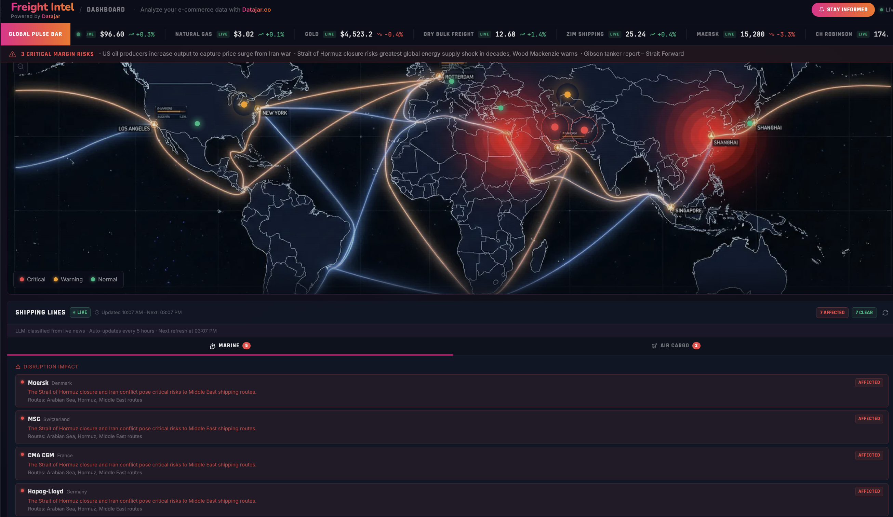

Case Studies
Real product work — from 0-to-1 founding and marketplace building, to B2B SaaS discovery and high-stakes A/B testing.
GetHalal
Problem: 500,000 Halal consumers in Berlin had no reliable delivery option for quality Halal meat during COVID-19 lockdowns.
Process: Survey-driven demand validation, 200€ bootstrapped launch, community-led viral growth, and iterative A/B testing that lifted conversion from 3% to 7%.
Proof: 250K€ GMV in year 1 from a 30K€ investment. ~1M€ raised from VCs and Angels. 151% customer growth. 2.5 orders/customer/month retention.


Everstox
Problem: No product roadmap existed for the inventory team. Decisions were reactive, not discovery-led.
Process: Applied the Opportunity Solution Tree (OST) framework — synthesized AM notes, ran customer interviews, held a cross-functional prioritization workshop, and built hypotheses scored by Effort vs. Impact.
Proof: Shipped stock reconciliation before peak e-commerce season. 30% of customers converted on rollout. 60% utilized it at least once a month.
Flightright
Problem: Revenue was capped by a narrow market — only 3 in 100 flights qualify for EU261 compensation. Growing cases alone wasn't enough.
Process: Designed a fee transparency A/B test, showing lawyer fees to Variant B customers post-POA signing without deducting from their payout. Tracked at Day 1, 3, 7, and 14 with a strict conversion guardrail of −5% relative.
Proof: Conversion held flat across both groups. GMV increased by 27% with no impact on the funnel.


Freight Intel
Problem: E-commerce merchants have no way to translate macro global events — freight disruptions, energy spikes, geopolitical crises — into SKU-level margin decisions in real time.
Process: Problem-first framework using the "10 Steps Ahead" methodology. Designed around three merchant decision points: repricing, reordering, and renegotiating. Built with LLM-based news classification and live commodity data integration.
Proof: 3–7% net margin recovery via dynamic pricing. 50+ global data points automated. Time to action reduced from days to minutes.